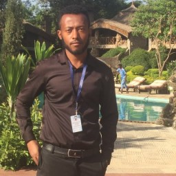

|  |
Yilikal Teshome Phone number 1:-+251-9-15-83-58-59 Phone number 2:-+251-9-00-30-47-44 Yilikalt12@gmail.com Ethiopia |
Date of Birth:- NOV 23,1993
sex:-Male
citizen ship:-Ethiopian
citizenship status:-Permanent rezidence
Translation :-
Amazon AI translation and proof reading project - I have worked on more than 50 tasks and documents.
I have the files as a proof of the aforementioned claim.
Below is attached a samples of what I have done.Data mundi and Lingua World Services - - Freelance translator
SKILLS